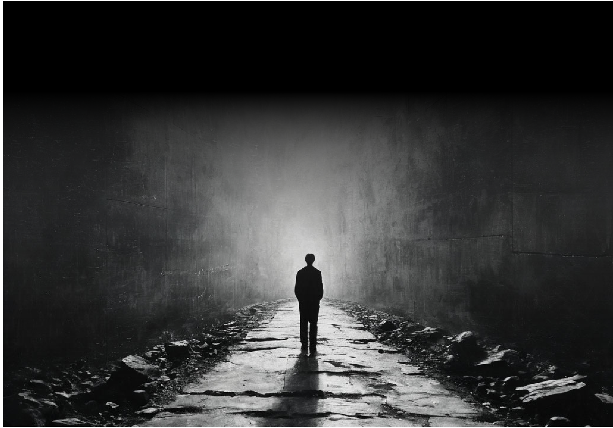
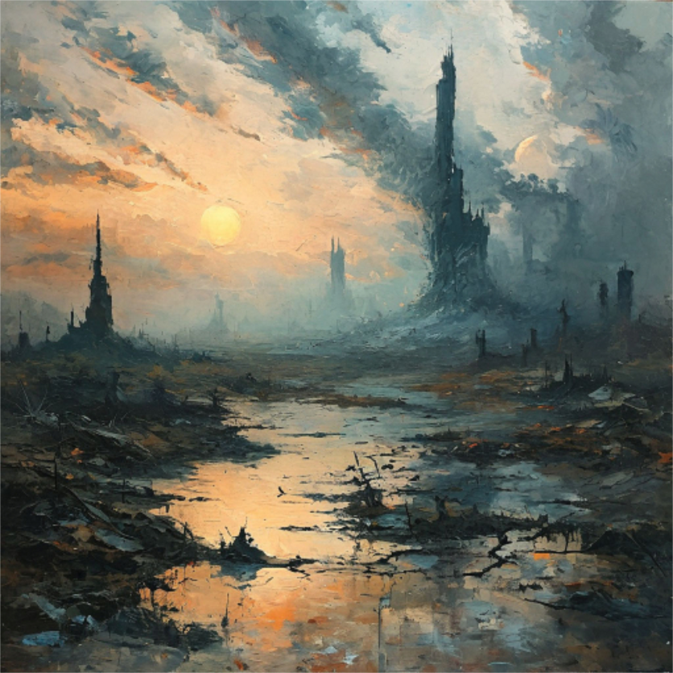
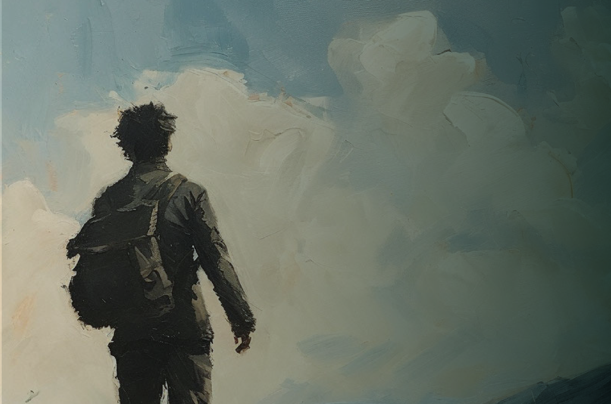

Если твой день рождения приходится на субботу, то тебя ждёт непростой год, когда необходимо будет расставить приоритеты и выстроить перед собой определённые планы и цели, чтобы их достигать.
Суббота

Без этого, к сожалению, год может создавать такие сложные препятствия и препоны для желаний, что можно только диву даваться, откуда только что берётся.
Год испытаний на прочность, проверки на твою целостность, на то, действительно ли те планы и цели, которые у тебя есть, они твои, и они тебе нужны. Если в течение года ты от них не откажешься, а напротив, упрочишься в своём желании, то тогда сможешь получить максимум от энергии этого года и даже поддержку.
В течение года желательно обращаться за помощью к руководителям, к начальникам. К тем, у кого больше жизненного опыта, пользоваться опытом старых людей, а также влиять на них, заводить связи с теми, кто может оказать какую-либо протекцию. Не гнушаться старого опыта в прямом и переносном смысле для того, чтобы реализовать свои желания и потребности.
Без каких-либо целей в течение года можно ожидать снижение уровня жизни и стагнацию по всем фронтам, ошущение некой безнадёги и депрессивных настроений. Как будто весь мир ополчился против тебя и любое действие, любой шаг воспринимается, находит болышое сопротивление извне.


Поэтому построй изначально план по завоеванию мира, по достижению своих целей, и тогда, благодаря этому плану, ты не потеряешь ориентиры и будешь по чуть-чуть идти к своим целям, пользуясь помощью и поддержкой старшего поколения.